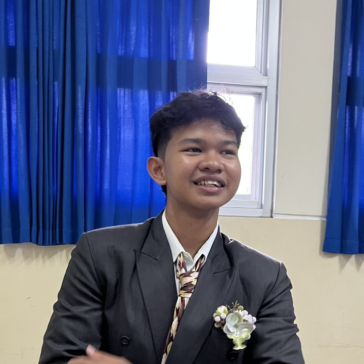

Tertarik pada Hukum Perdata, Hukum Bisnis, Penelitian Hukum, serta Pengembangan Argumentasi Hukum.
Universitas Sebelas Maret
2025 - Sekarang
Mengikuti kegiatan akademik dan pengembangan kemampuan hukum.
Aktif mengikuti seminar hukum, legal drafting, dan diskusi akademik.
Menyusun analisis hukum dan kajian terhadap isu-isu hukum kontemporer.
📧 benedictusbisma11@gmail.com
📱 +62811188596
📷 Instagram: @bismabeneduc
💼 LinkedIn: https://www.linkedin.com/in/benedictus-bisma